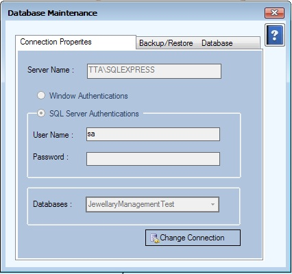

Database Maintenance Setup
DataBaseUtilities Setup(ConnectionProperties)
DataBaseUtilities Setup(DataBaseBackup)

- Data များကို Backup ပြုလုပ်လိုလျှင် Backup Database Button ကိုနှိပ်၍ မိမိသိမ်းချင်သော ပတ်လမ်းကြောင်းကိုရှာပါ။ ပြီးလျှင် သိမ်းမည့် Backup Name ပေးပြီး သိမ်းဆည်းနိုင်ပါသည်။ သိမ်းဆည်းရာတွင် Global Setting တွင် သိမ်းဆည်းထားသော Server Share Path လမ်းကြောင်းအတိုင်း Server စက်ထဲတွင်သိမ်းဆည်းသွားမည်ဖြစ်သည်။ Backup Database Button ကိုနှိပ်လျှင် လမ်းကြောင်းတစ်ခုပေါ်လာ မည်ဖြစ်ပြီး ထိုလမ်းကြောင်းသည် Client စက်ထဲတွင်သိမ်းဆည်းမည့်လမ်းကြောင်းဖြစ်သည်။ Backup Database ပြုလုပ်ရာတွင် Server နှင့် Client စက် ၂ခုလုံးတွင် တစ်ပြိုက်နက်ထဲသိမ်းပေးမည် ဖြစ်သည်။ ဥပမာ- \\ydnm\YDNMShare ထဲတွင်သိမ်းရမည်ဖြစ်ပြီး YDNMShare သည် Server စက်ထဲတွင်ရှိသော Share Folder ဖြစ်ရပါမည်။
- Data များကို Restore လုပ်ချင်လျှင် Restore Database Button ကိုနှိပ်၍ Backup Name ပေးထားသော Folder ပေါ်တွင် Restore လုပ်နိုင်ပါသည်။ Restore လုပ်ရာတွင် Backup Database ပတ်လမ်းကြောင်းရှိရမည် ဖြစ်သည်။